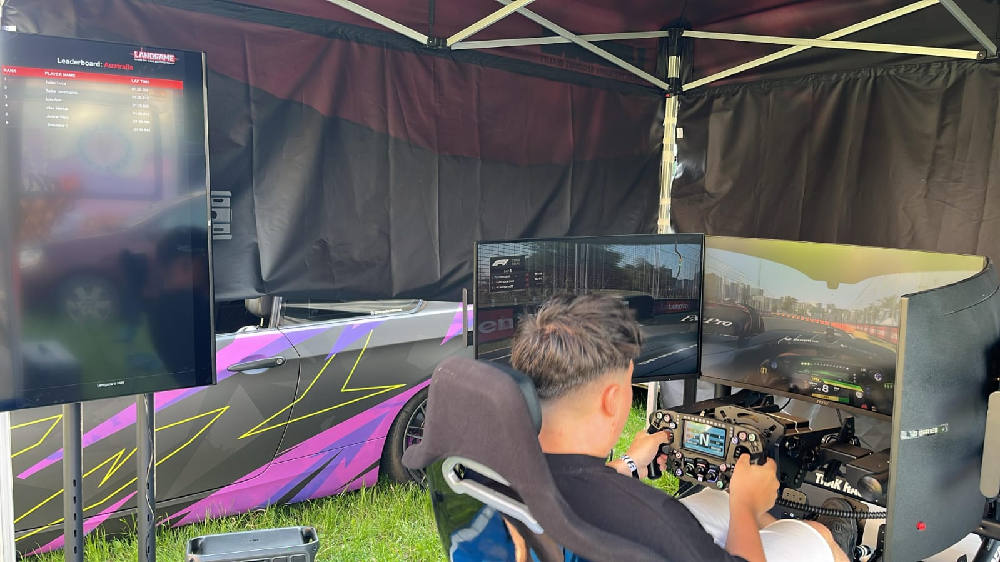
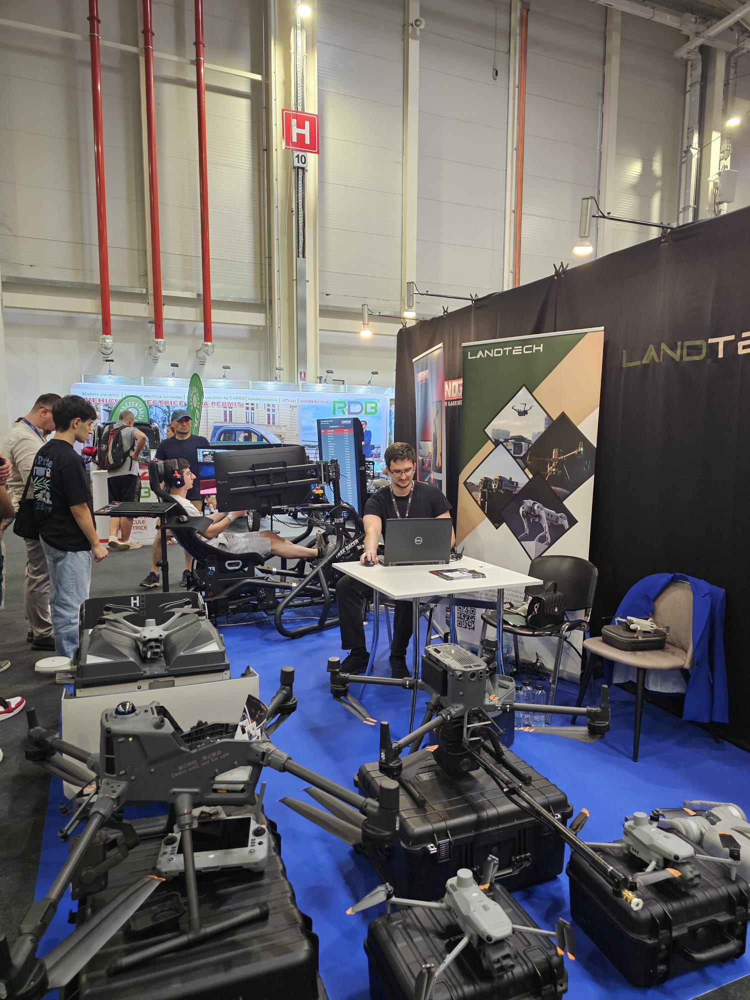

Building an F1 Racing Leaderboard with AI: A Complete Solution Created by Code Assistants

The Power of AI in Modern Development
What if I told you that a complete, production-ready F1 racing simulator leaderboard system could be built entirely using AI coding assistants? Not just simple scripts or prototypes, but a full-featured application with real-time telemetry processing, administrative controls, timer management, and a polished user interface that's currently running at racing events across Romania.
That's exactly what I accomplished with my F1 24 Leaderboard project – an end-to-end solution built exclusively using AI tools, specifically Gemini 2.5 Pro for architectural planning and Claude Sonnet 3.7 in Cursor for code generation.
The Vision: Professional Racing Experience
The goal was ambitious: create a leaderboard system for a simulator shop with multiple F1 racing rigs that could:
- Capture real telemetry data from F1 2024 game sessions on each simulator
- Display live leaderboards on a TV screen, automatically cycling through all F1 tracks
- Provide administrative controls for managing player assignments and session timers
- Track lap times and maintain persistent leaderboards for each official F1 2024 circuit
- Support multiple network configurations for different deployment scenarios

The AI-First Development Approach
Phase 1: Architectural Planning with Gemini 2.5 Pro
Rather than diving straight into code, I started by leveraging Gemini 2.5 Pro to create a comprehensive development plan. I provided the AI with my requirements and asked it to design the entire system architecture, including:
- Technology stack recommendations (Python + FastAPI + SQLite + vanilla JavaScript)
- Network topology for multi-rig deployments
- Database schema design
- API endpoint specifications
- Development phases and testing strategies
The AI generated a detailed 96-point specification document that became my development bible. This wasn't just high-level guidance – it included specific implementation details, error handling strategies, and even code style conventions.
Phase 2: Cursor Rules and AI-Guided Development
The architectural plan was then converted into Cursor rules (stored in .cursor/rules/development-rules.mdc), creating a persistent context for the AI coding assistant. These rules ensured that every piece of generated code would:
- Follow the established architecture patterns
- Maintain consistency across the entire codebase
- Implement proper error handling and logging
- Adhere to Python PEP 8 standards
- Include comprehensive documentation
Phase 3: Code Generation with Claude Sonnet 3.7
With the architectural foundation in place, I used Claude Sonnet 3.7 in Cursor to generate the actual implementation. The AI created:
- Backend API (FastAPI): Complete Python backend handling telemetry ingestion, leaderboard logic, and administrative functions
- Telemetry Listeners: UDP packet listeners that capture F1 2024 game data and extract lap times
- Database Management: SQLite integration with proper schema and data persistence
- Web UI: Clean, responsive interfaces for both public leaderboard display and administrative control
- Timer System: Session management with countdown timers and operator controls
- Network Configuration: Scripts for managing different deployment profiles (shop vs. mobile setups)

Technical Deep Dive
Real-Time Telemetry Processing
One of the most impressive aspects of the AI-generated solution is how it handles F1 2024 telemetry data. The system:
- Integrates with the open-source f1-24-telemetry-application library
- Runs dedicated UDP listeners on each simulator PC
- Captures lap completion events and extracts timing data
- Associates lap times with specific players assigned to each rig
- Submits data to the central backend via HTTP APIs
Sophisticated State Management
The leaderboard display features intelligent state management:
- Auto-cycling: Automatically rotates through all 24 F1 2024 tracks every 30 seconds
- Manual override: Administrators can select specific tracks to display
- Real-time updates: New lap times appear immediately without page refreshes
- Persistent configuration: All settings and player assignments survive system restarts
Administrative Control Suite
The admin interface provides comprehensive control over the entire system:
- Player Management: Assign names to specific simulator rigs
- Session Timers: Set and monitor play time allocations (15 min, 1 hour, etc.)
- Track Selection: Override auto-cycling for specific events
- System Monitoring: View connection status and system health
Testing and Refinement: AI-Assisted Debugging
Even the testing and debugging phase leveraged AI assistance. When issues arose during deployment, I could describe problems to Claude Sonnet, and it would:
- Analyze error logs and suggest fixes
- Generate test scenarios to reproduce bugs
- Propose optimizations for performance issues
- Help troubleshoot network configuration problems
This AI-assisted debugging was particularly valuable when fine-tuning the telemetry capture logic and ensuring reliable operation across different network configurations.
Real-World Deployment Success
The proof of concept became a production reality. The system has been successfully deployed at:
- Moto Events in Brașov: Public demonstrations with a single racing rig setup
- Tech Days in Bucharest: Technology showcases with a portable single-rig configuration
- Simulator Racing Shop: Daily operation with 4 F1 racing rigs in a permanent installation
The system handles real telemetry data, manages concurrent sessions, and provides a professional racing experience that rivals commercial solutions. The flexible architecture allows it to work equally well with single-rig portable setups and multi-rig permanent installations.
What This Means for the Future of Development
Democratization of Complex Software
This project demonstrates that sophisticated, production-grade applications can now be built by developers without deep expertise in every involved technology. The AI assistants handled:
- Complex networking and UDP protocol handling
- Database design and optimization
- Real-time web application architecture
- Cross-platform deployment considerations
Speed of Development
What would traditionally take weeks or months of development was accomplished in a fraction of the time. The AI-generated solution was functional and worked exactly as intended from the start.
Trust in AI-Generated Solutions
The remarkable aspect of this project is that I never read a single line of the generated code. The AI created a working, production-ready system that I deployed with complete confidence based purely on its functionality. This represents a new paradigm where we can trust AI to handle implementation details while we focus on requirements and outcomes.
Key Takeaways for Developers
1. Start with Architecture, Not Code
Using Gemini 2.5 Pro to design the system architecture before writing any code proved invaluable. The AI helped identify potential issues and design patterns that would have been easy to miss.
2. Invest in Good Prompts and Context
The Cursor rules file acted as a persistent context that ensured consistency across the entire codebase. Good prompting is as important as good coding.
3. AI Excels at Integration
Rather than building everything from scratch, the AI was excellent at integrating existing libraries and tools (like the F1 telemetry parser) into a cohesive solution.
4. Focus on Outcomes, Not Implementation
The AI-assisted development process proved that we can achieve complex functionality without diving into implementation details. The focus shifts from "how to code" to "what should it do."
The Technical Stack
For those interested in the technical details, the complete system includes:
- Backend: Python 3.x with FastAPI framework
- Database: SQLite for local data persistence
- Frontend: HTML5, CSS3, vanilla JavaScript
- Telemetry: UDP listeners using F1 2024 telemetry library
- Deployment: Windows batch scripts with network profile management
Conclusion: The New Era of Development
This project represents more than just a successful application – it's a glimpse into the future of software development. When AI tools can generate production-ready, complex applications from architectural specifications, it fundamentally changes what's possible for individual developers and small teams.
The F1 leaderboard system continues to operate successfully in production, handling real telemetry data and providing professional racing experiences. It stands as proof that the question is no longer "Can AI build real software?" but rather "What amazing things will we build next with AI as our development partner?"
The age of AI-assisted development isn't coming – it's here, and it's more powerful than we imagined.
Keep Reading
Continue with the blog index, read My First Year at RebelDot, or go back to the homepage for projects and awards.